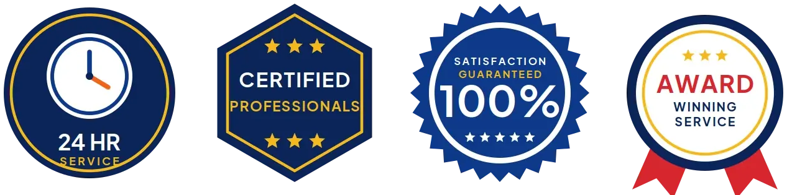

Plumbing Inspection in Revere, MA
High water bill with no visible leak? We find where the water is going in Revere, MA.
- Flat Pricing
- Licensed Massachusetts Plumbers
- Local Revere Plumbers
- Clear Reports

Book a Plumbing Inspection This Week in Revere, MA
BWM Plumbing ranks each finding so you know what to fix first.
Experienced Plumbing Inspections in Revere, MA
BWM Plumbing goes deeper than a general home inspection, which often stops at running faucets and flushing toilets. Our licensed plumbers identify polybutylene, Kitec and galvanized pipe, measure pressure and look for early signs of slab leaks on every visit. It is a plumber's look, not a generalist's.
Our expertise includes:
- Sewer camera inspections with recorded video and line location
- Gas connector and shutoff checks
- Meter leak tests, pressure readings and slab leak checks

Additional Plumbing Maintenance Services in Revere, MA
Our maintenance and specialty plumbing services in Revere, MA protect your home year-round and extend the life of every system.


Water Heater Maintenance near Revere


Customers
Why Choose BWM Plumbing for Plumbing Inspection in Revere, MA?
Our reports include photos, video and estimated repair ranges. That makes negotiating a purchase or budgeting for upgrades much easier.
- Code Issues Flagged, Our licensed plumbers flag code problems, which matters most in older homes.
- Preventive Care, Inspections find small leaks and slow drains before they turn into big repairs.
- Foundation Protection, Meter tests and thermal imaging catch under-slab leaks before they damage floors and foundations.
Citywide Coverage
Inspection service covers Revere and the surrounding communities. We spend more time on older houses. Older areas tend to have cast iron, clay and galvanized, and newer homes lean toward PEX, PVC and tankless, so the checklist adjusts.
Experienced Team
Each BWM Plumbing technician keeps up with Massachusetts plumbing codes and current practices. Rules get updated often. Current code knowledge lets us flag missing expansion tanks or poor relief valve piping that a general inspector might miss.
Safety-First Approach
Safety items come first in every inspection. Gas and vents get a close look. We check connectors, vents, relief valves and expansion tanks, since those failures can injure people, not just damage property.
Trusted Certified Revere Plumbing Services Professionals
At BWM Plumbing, we take pride in licensed, certified plumbing services throughout Revere, MA. Those papers on the wall mean something. Every repair, install and maintenance visit follows strict safety and quality rules, and the plumbers doing the work carry recognized industry credentials.
Call Us Now PHCC Plumbing Contractor Recognition
PHCC Plumbing Contractor Recognition Better Business Bureau (BBB) Accreditation
Better Business Bureau (BBB) Accreditation Angi Certified Pro
Angi Certified Pro ISO 9001 Quality Management Certification
ISO 9001 Quality Management CertificationDetailed Plumbing Inspections in Revere, MA
Water Pressure and Supply Pipe Review in Revere, MA
We measure static water pressure and check the pressure reducing valve if one is installed. High pressure ages fixtures fast. Pressure above 80 psi shortens the life of fixtures, supply hoses and water heaters, and we also identify the supply pipe material, from copper and CPVC to polybutylene, Kitec and galvanized.

Rental and Commercial Property Inspections in Revere
Landlords and property managers use our inspections between tenants or before buying an investment property. Every unit gets its own notes. Water heaters, fixtures and sewer lines get recorded unit by unit, and commercial inspections can add backflow assemblies and grease trap lines, which helps owners budget for maintenance and larger repairs.
Pipe Material and Water Quality Review in Revere, MA
Pipe material says a lot about what to expect from a house. Our plumber identifies the supply pipe, whether copper, CPVC, PEX, galvanized, poly or Kitec, and explains how each usually fails. Certain types need a plan. Poly and Kitec fail suddenly and galvanized chokes off with rust, so we flag them with replacement options.
Hard Water Damage Assessment in Revere
Private wells in Massachusetts vary widely, so testing for acidity, iron and other minerals around Revere is the right start before adding treatment. Hard water leaves scale in pipes, fixtures and water heaters. We look for crusty aerators, scaled showerheads, slow-filling toilets and sediment in the water heater, and we can run a simple hardness test on the spot. Then we explain your options. Softeners, filters and scale reducers all help, and we suggest the one that matches the reading we took.
Leak Detection and Slab Screening in Revere
A spinning water meter with all fixtures off is a clear sign of a hidden leak. Warm spots are another clue. We test the meter, watch for pressure loss and look for damp baseboards and mildew, and on slab homes we follow up with acoustic and thermal equipment to pinpoint the leak. Early slab leak finds save floors and foundations.
Whole-Home Plumbing Inspections in Revere
Our whole-home inspections focus on the problems we see most in Massachusetts houses. Common finds include old pipe, stiff shutoffs, tired heaters, slow drains and rooty or sagging sewers. Each gets tested, not guessed at. Catching a corroded fitting or a partial sewer blockage now keeps it from becoming a ceiling stain or a backup on a holiday weekend.
Commercial Plumbing Inspections in Revere, MA
Commercial buildings have equipment homes do not, so our commercial inspections cover more ground. We look at backflow assemblies, grease interceptors, commercial water heaters, flush valves and the building sewer. Inspectors like documentation. The written report helps facility managers plan and budget repairs before a health inspector or the water provider writes them up.

Sewer Line Camera Inspections in Revere, MA
A sewer camera shows the inside of the main drain without digging. The camera goes in at a cleanout and travels to the main or the tank, recording roots, cracks, offsets and bellies along the way. A locator marks the depth. Tree roots and shifting fill around old clay or cast iron sewer laterals are a frequent cause of backups in established neighborhoods.
A Nearby Plumbing Inspection in Revere, MA
Local plumbers know which problems show up most in Revere homes. Local conditions shape the findings. We know which neighborhoods tend to have clay sewers with roots, which ones were built with polybutylene and where pressure runs high enough to need a reducing valve.
We know the building eras and pipe materials common in Revere homes. That focus saves time. Knowing what was typically installed in each era helps us check the right things first and give you clear answers instead of a long list of maybes.
BWM Plumbing at a Glance
- Fully licensed plumbing team covering Revere, MA
- 24/7 emergency service with same-day scheduling
- Upfront, flat-rate pricing before work begins
- 4.9-star rated by 434+ Massachusetts customers
Revere Map
Revere Information
- Population
- 57,954
- Area codes
- 781/617/978
- Service area
- Revere and towns within a 40 mile drive
- Nearby
- Everett, Malden, Lynn, Boston
Older supply pipe, aging sewer lines and scale inside fixtures make a plumber's inspection worth the hour or two it takes in Revere, MA.
Talk to a Plumber
Call BWM Plumbing for honest, reliable plumbing from people who know the trade in Revere, MA.
Our Specialized Plumbing Services in Revere, MA
At BWM Plumbing, you get every kind of plumbing service from one company across Revere, MA. We go from leak detection all the way to full system installations, for homes and commercial buildings, and we do it quickly at a fair price. Take a look at our core services below:


How a Plumbing Inspection Works in Revere, MA
Here is how we inspect your plumbing and deliver a report you can act on.
Call and Schedule
Call (857) 335-4894 and tell us about the property. We quote the inspection and set the appointment.
Inspect and Record
Our plumber tests pressure, checks for leaks, inspects fixtures and heaters and runs a sewer camera, taking photos and video throughout.
Report and Advise
You get a written report with photos, video and ranked findings. We explain each item and give repair estimates if you want them.
Frequently Asked Questions About Plumbing Inspection in Revere
A standard plumbing inspection in Revere, MA usually costs $150 to $350. Size changes the price. The base price covers pipe, fixtures, the heater, drains and pressure, and the sewer camera is usually a separate line since it adds time and equipment. You get the price when you book.
A plumbing inspection is a deeper look at one system. Home inspectors cover the basics. Home inspectors run water and flush toilets, and our plumbers add sewer video, pressure tests, pipe identification and code review.
It is smart before buying any home, especially one over 25 years old or with large trees. Backups and gurgling drains also call for one.
We identify supply pipe materials including polybutylene, Kitec, galvanized, copper, CPVC and PEX. We note known risks and replacement options.
High water bills, repeat clogs, slow drains and discolored water are common signs. Banging pipes count too. Strange sounds from the pipes or the water heater, along with visible moisture or mold near fixtures, usually point to an underlying problem that needs a professional look before it gets worse.
We can include estimated repair ranges in the report and firm quotes if you want us to do the work. You are never required to hire us.
Every one to two years works for most homes. Some houses need it yearly. If your home has original supply pipe, large trees near the sewer or a history of leaks, a yearly inspection catches problems while they are still small and cheap to fix.
Every inspection comes with a written report, photos and sewer video when included. Most reports arrive same day.
What Our Customers Say About Our Plumbing Experts
Jessica T.
We were adding a gas range in a kitchen remodel and needed a new line run from the meter. The plumber pulled the permit, ran the pipe through the crawl space, and had it inspected and approved within the week.
Gas Line Repair · Boston, MA
Megan L.
Our upstairs tub drained so slowly that every shower turned into a bath. BWM Plumbing pulled a wad of hair out of the stopper and then snaked the line past the trap. Three months later it still drains fast.
Drain Cleaning · Medford, MAEmily R.
The shutoff valve under our kitchen sink snapped off in my hand on a Sunday morning. BWM Plumbing had someone out by early afternoon. He replaced both angle stops with quarter turn valves and showed me where our main shutoff was, which I honestly did not know.
Plumbing Repair · Somerville, MASofia M.
Two new toilets went in during one visit. The tech set them on new wax rings and swapped the old supply lines. He also noticed our bathroom faucet dripping and replaced the cartridge while he was there. No mess left behind.
Toilet Installation · Lynn, MA
Greg S.
I manage a small strip center with six tenants. BWM Plumbing handles our annual backflow testing and fixed a recurring clog in the shared sewer line that had been backing into the nail salon. Their reports come in clean and on time.
Commercial Plumbing · Somerville, MAMark T.
The floor drain in our office break room backed up every few weeks. The plumber ran a cable, then put a camera down and found roots at a joint about thirty feet out. Seeing it on the screen made the decision easy.
Drain Cleaning · Revere, MA